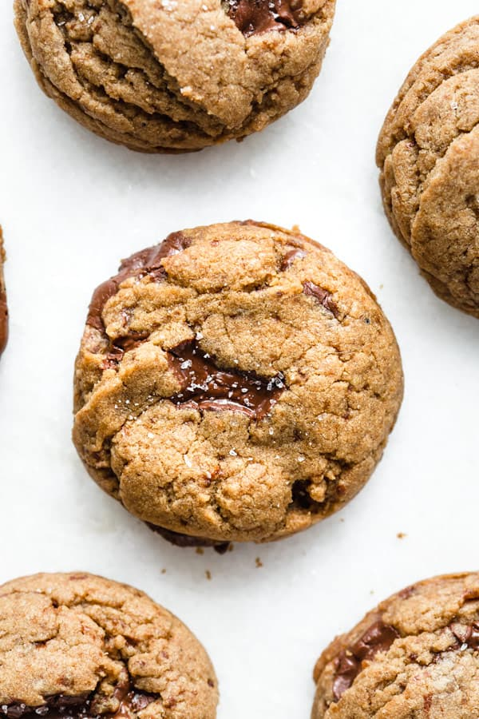

Dutch Spiced Cookies

Description
These "Dutch Spiced" cookies take their name from the speculaas-inspired spices in the dough and not the other famous Dutch herb.
Try these next time you have the munchies!
Sprinkling sea salt on top may sound strange if you haven't done it before, but it's a top tip to enhance the flavour of any sweet cookie.
Ingredients
- 120g softened butter
- 50g brown sugar
- 150g spelt flour (can be substituted witth an equal amount of all purpose or plain flour)
- 1tsp ground nutmeg
- 1tsp ground ginger
- 1tsp ground cinnamon
- coarse sea salt for spirnkling
- ~100g chocolate chips (optional but highly recommended!)
Steps
- Preheat oven to 180 Celsius
- Line a baking tray with baking paper
- Using a stand mixer, beat the sugar and butter until fully incorporated and fluffy
- Add the flour and spices, mixing gently until just combined. The dough should be soft but not sticky.
- Optional step: If using chocolate chips, add now and fold through
- Roll into evenly sized balls and place on baking tray
- Bake for approximately 15 minutes or until golden brown
- Remove from the oven and lighlty sprinkle with sea salt while still hot